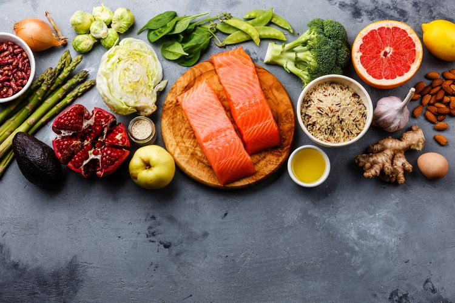

Základy výživy u sportovce jsou klíčové pro dosažení optimálního výkonu, regeneraci a celkového zdraví. Správně nastavená strava poskytuje energii, podporuje růst svalové hmoty, imunitu a zlepšuje psychickou i fyzickou kondici. Základní živiny pro sportovce jsou bílkoviny, sacharidy, tuky a voda.
